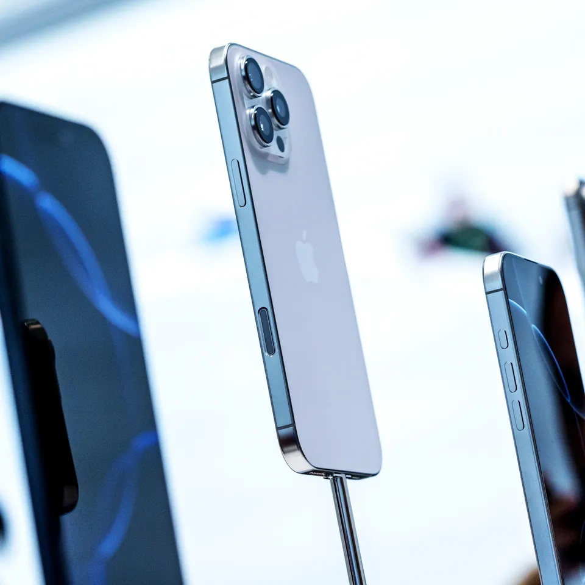

How Useful Will Apple Intelligence Be? The Next iPhone Will Tell Us

Apple held one of its splashy media events. This one was used to show off its next round of iPhones, AirPods,
and Apple Watches. These are three of its biggest products, and all of the design tweaks feel very familiar
to the current Apple universe. But Apple has also trotted out some new tricks, like sleep apnea detection in
the Apple Watch and a new feature that instantly turns a pair of AirPods Pro into hearing aids. And of
course, the company is also very keen to get consumers hyped up about the iPhone’s new Apple Intelligence
features—even if those flashy AI tricks won’t start becoming available until next month.
Elon Musk targets OpenAI’s for-profit transition in a new filing

In a new motion filed late Friday in his lawsuit against OpenAI, Elon Musk’s attorneys have asked for a preliminary injunction to stop OpenAI from transitioning to a for-profit enterprise, reports TechCrunch. They also asked the judge to forbid the company from continuing alleged practices that they say violate US antitrust laws.Musk’s lawyers claim that because of CEO Sam Altman’s alleged self-dealing, OpenAI “will likely lack sufficient funds to pay damages” if Musk wins the suit. The motion follows reports of OpenAI’s intent to become a for-profit business and that it recently began early talks with regulators to move its structural change forward.